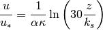

proffilo.velocity.compute_velocity_loglaw¶
-
proffilo.velocity.compute_velocity_loglaw(z, z0, ustar, alpha=1)¶ Compute log-law velocity profile.
Compute a velocity profile following the log-law (a.k.a. Law of the Wall) formualtion. Takes as input the vector of vertical coordinates z, the roughness height z0, the shear velocity ustar, and optionally the stratification adjustment coefficient
 .
.CITATIONS

- Parameters
z (ndarray) – Vertical coordinate vector.
z0 (float) – Roughness height.
ustar (float) – Shear velocity.
alpha (float) – Stratification adjustment coefficient.
- Returns
velocity – Velocity estimated at z
- Return type
ndarray